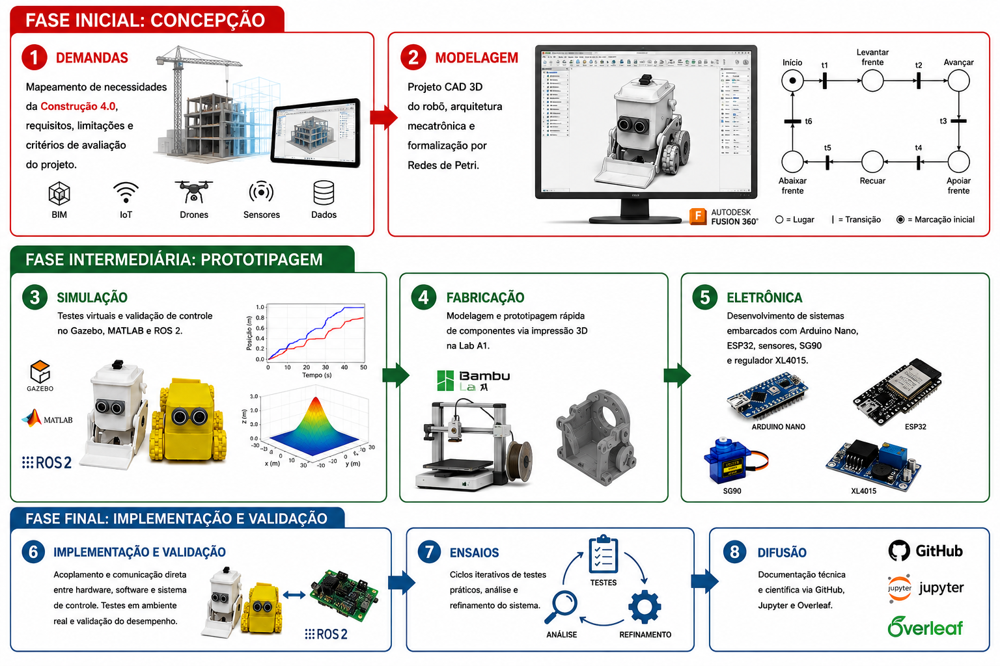

INOVAMECH: um ecossistema de inovação em tecnologia mecatrônica
Visão geral
O INOVAMECH – Laboratório de Inovação em Mecatrônica é uma infraestrutura permanente de pesquisa, ensino, extensão e desenvolvimento tecnológico, vinculada ao Departamento de Ciências Exatas e da Terra I (DCET-I) da Universidade do Estado da Bahia (UNEB). O laboratório foi criado com o apoio financeiro do Programa ProInovação, da AUI – Agência UNEBiana de Inovação, e atualmente constitui uma estrutura consolidada para o desenvolvimento de tecnologias inteligentes e a formação de recursos humanos.
O INOVAMECH funciona como um ecossistema de inovação que integra infraestrutura tecnológica, metodologias de desenvolvimento, projetos experimentais e conhecimentos de Engenharia Mecatrônica, Engenharia Civil, Automação Industrial, Computação, Ciência de Dados, Energias Renováveis e Educação Tecnológica. Sua atuação combina engenharia, eletrônica, computação, controle e inteligência artificial para transformar conhecimento científico em soluções aplicáveis às demandas da universidade, da indústria e da sociedade.
O laboratório orienta-se por três princípios: desenvolvimento tecnológico aplicado a desafios reais; formação baseada em projetos, com participação direta dos estudantes em todas as etapas; e disseminação do conhecimento por meio de documentação técnica, materiais educacionais, códigos computacionais e recursos reutilizáveis.
Metodologia PIM
A Prototipagem para Inovação Mecatrônica (PIM) é a metodologia própria do INOVAMECH para conceber, desenvolver, validar e evoluir soluções mecatrônicas. O ciclo é organizado em oito etapas: identificação de demandas e requisitos; modelagem computacional e projeto de sistemas; simulação virtual; fabricação digital; desenvolvimento eletrônico; integração entre hardware e software; validação experimental; e documentação e disseminação dos resultados.

O processo utiliza CAD, Redes de Petri, Gazebo, MATLAB/Simulink, ROS 2, plataformas de simulação eletrônica, impressão 3D, Arduino, ESP32, sensores, atuadores e sistemas embarcados. A validação ocorre em ciclos iterativos de projeto, construção, teste, análise e refinamento. Os resultados são documentados em repositórios GitHub e Jupyter Book, favorecendo a reprodutibilidade e sua incorporação às atividades de ensino, pesquisa e extensão.
Eixos tecnológicos e infraestrutura
Os eixos tecnológicos atuais são Robótica e Sistemas Inteligentes, com destaque para as plataformas GyroBot e Otto, robótica móvel, sistemas autônomos e controle; Construção 4.0, com monitoramento inteligente da cura do concreto, sensores, IoT e Redes de Petri; Automação Industrial, com bancada baseada em CLPs, sensores, atuadores, supervisão e comunicação industrial; Energias Renováveis, com bancada fotovoltaica inteligente, monitoramento e gerenciamento energético; e Mineração de Processos, utilizando ProM, PM4Py e Python para descoberta, conformidade, gargalos e modelagem de processos.
Esses eixos compartilham competências em modelagem, simulação, sistemas embarcados, manufatura aditiva e desenvolvimento de software. A impressão 3D reduz o tempo entre a concepção e a validação de protótipos, enquanto a simulação permite testar soluções antes da construção física. Essa integração fortalece a formação prática, a pesquisa aplicada, a colaboração entre áreas e o desenvolvimento regional.
Perspectivas e compromisso institucional
Como estrutura permanente, o INOVAMECH pretende ampliar suas plataformas robóticas com sensores avançados, visão computacional e inteligência artificial; integrar sistemas físicos e digitais; expandir a instrumentação contínua na Construção 4.0; desenvolver soluções sustentáveis de eficiência energética; e fortalecer a educação tecnológica aberta. O laboratório promove a integração entre universidade, sociedade e inovação, contribuindo para a formação de profissionais alinhados à transformação digital e para a criação de soluções de impacto científico, tecnológico, social e econômico.
Equipe
Prof. Dr. Robson Marinho da Silva — coordenação; Prof. Paulo James de Oliveira; Prof. Evangivaldo Almeida Lima; e os estudantes Guilherme Souza Lopes, João Bruno M. dos Reis Silva, Vinicius Brito de Oliveira, Sauan Mendes dos Santos e Antonio Samuel C. Nascimento.
Contato
E-mail: inovamechdcet1@uneb.br
Instagram: @inovamech.eng
Venha fazer parte do time!
O INOVAMECH está aberto à participação de estudantes, pesquisadores, professores e colaboradores interessados em tecnologia, inovação e desenvolvimento de projetos. Entre em contato para conhecer as possibilidades de participação, pesquisa, extensão e colaboração.
Reconhecimento institucional: agradecemos à AUI – Agência UNEBiana de Inovação pelo apoio financeiro do Programa ProInovação, fundamental para a criação do INOVAMECH.